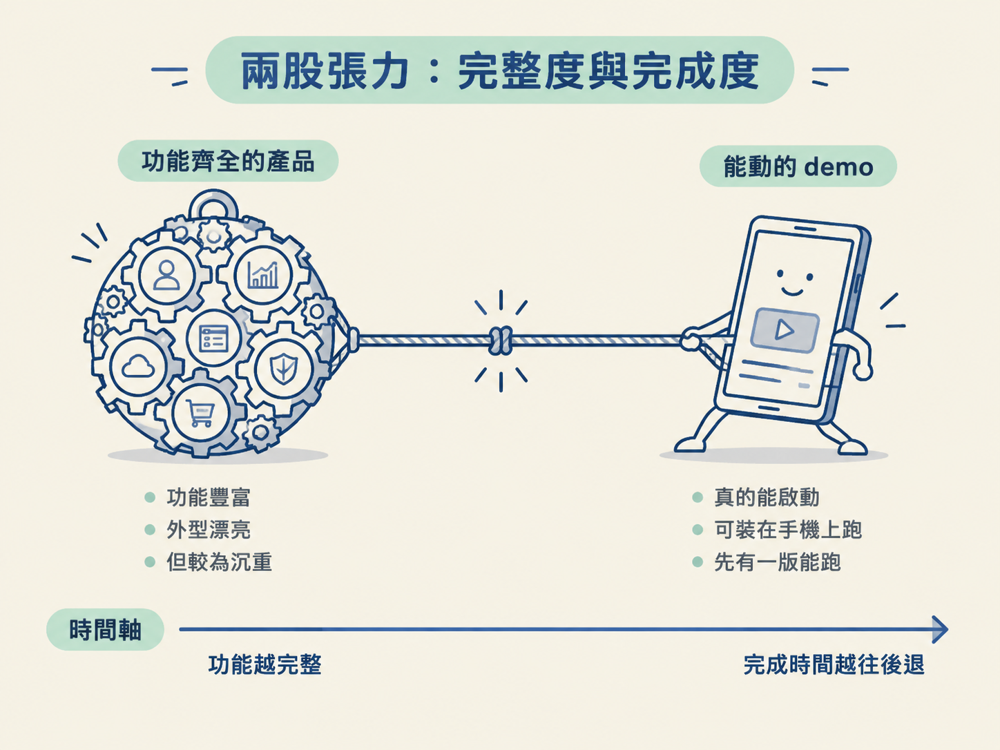
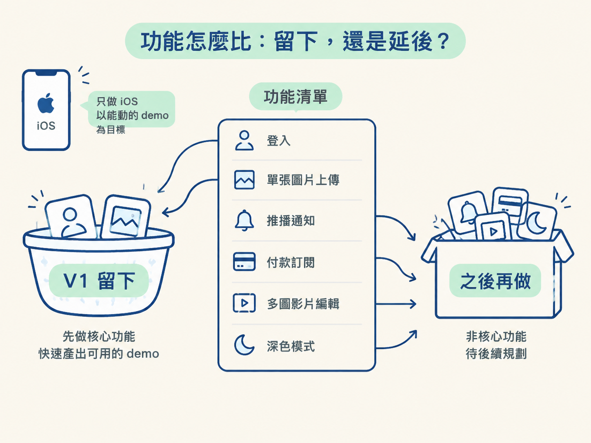
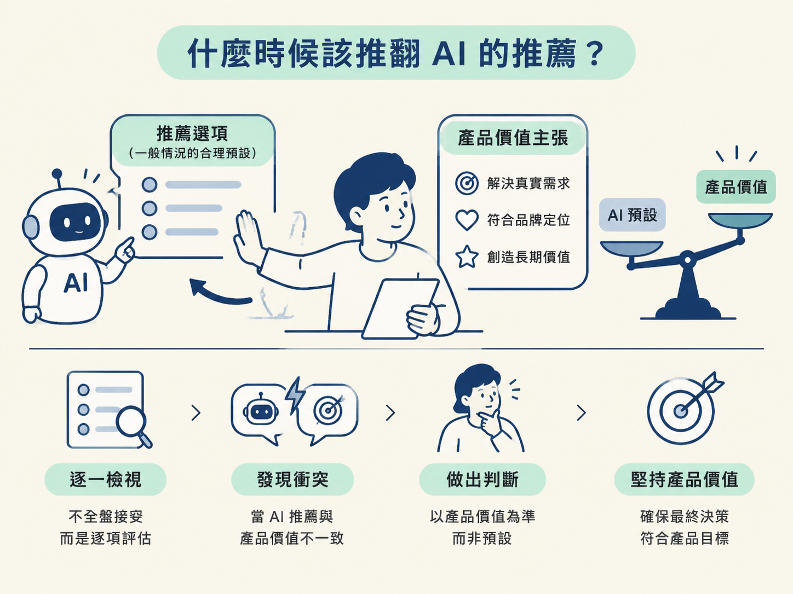

上一節的訪談，會把你的點子攤成一長串功能。看著清單時，每一項都像是「不能少」：推播要提醒使用者，付款才能收費，影片上傳才能讓內容更豐富。可是，如果你照著清單全部做完，app 很可能永遠到不了上架那一天。
因為每個功能背後都藏著一串工作。推播需要設定憑證，付款要經過審核，影片上傳要處理壓縮與時長。這些都是真實的工作，卻會讓「第一版」像一條不斷往後退的終點線。
所以這一節要決定的是：V1（第一個要上線的版本）到底留下什麼、延後什麼？你不是要把產品砍到失去意義，而是先做出一個能動、做得完，也能清楚說明產品在解決什麼問題的版本。
這個決定難，是因為有兩股力量同時拉著你。
一邊是完整度。你想像中的 app 可能有免費與付費、推播提醒、社群分享。拿掉任何一項，都會讓你覺得：「這樣還是我的產品嗎？」
另一邊是完成度。只有真的做出來、真的能裝在手機上執行，甚至真的送進 App Store，才算有一個產品。功能越完整，真正完成的時間往往就越晚。
這門課的選擇很明確：第一版先追求一個能動的 demo，而不是功能齊全的產品。功能可以之後再加，但「先有一版能跑」這件事越早發生越好。因為許多問題不是坐在規劃文件前想得出來的，必須等你真的操作 app，才會浮出水面。

不要只靠當下的興奮感逐項決定。可以先用同一套判準掃過整張清單，再把功能分成「V1 留下」與「之後再做」兩堆。
| 功能類型 | V1 的決定 | 理由 |
|---|---|---|
| 登入（Google／Apple） | 留下 | 核心流程的入口，且 Apple 規則要求有 Google 就要有 Apple |
| 單張圖片上傳 | 留下 | 核心功能的必要條件 |
| 推播通知 | 延後 | 要做憑證與權限，不是「能動」的必要條件 |
| 付款／訂閱 | 延後 | 牽涉審核與金流，成本高且非核心 |
| 多圖／影片編輯 | 延後 | 會拉長上傳與儲存的複雜度 |
| 深色模式 | 延後 | 不影響主流程，等有設計參考再做 |
課程示範的社群 app，最後收斂成一個很具體的 V1：只做 iOS，以「能動的 demo」為目標；支援 Google 與 Apple 登入；貼文只收單張圖片；留言採平鋪形式，而且只能刪除自己的留言；圖片上限是 10 MB，影片上限是 30 秒且 50 MB；先不做推播與付款；只做淺色模式；後端採 online-first，並加入重試機制。

面對清單上的每一項功能，可以依序問下面三個問題。這些問題的目的不是把所有功能都判成「延後」，而是幫你辨認哪些東西真的撐住核心流程。
這三句話像一把篩子。清單一項項篩過之後，你通常會發現，真正必須留下的功能比原本想像的少。
在訪談過程中，agent 往往會針對問題給出一個「推薦選項」。一般情況下，接受合理預設可以省下不少時間；但推薦不是命令，尤其當它和產品真正想提供的價值衝突時。
課程裡有一個清楚的反例。Claude 建議「先註冊，再進入建立計畫的 onboarding」，這看起來很合理。不過，講師的真實 app 希望使用者先填完資料、看到系統算出的目標，最後才要求註冊。原因是使用者要先嚐到甜頭，才更願意留下帳號。
因此，講師直接推翻了推薦選項。這裡的規則是：AI 的推薦代表一般情況下的合理預設；如果它和你的產品價值主張衝突，就以產品本身為準。

反過來說，如果你沒有特別理由，就大方接受推薦。不要為了顯得與眾不同，主動選一條會增加實作負擔的路。
另一個常見反例，是盲目自動接受 agent 的所有產出。真實專案需要人工檢視，不能無腦按下全部同意。規劃階段尤其如此，因為這裡的一個小決定，可能會被後面的程式碼放大成一大串成本。
V1 的目標是「能動的 demo」，不是功能齊全的產品。逐項檢查時，問自己：砍掉它，app 還能動嗎？它需要新的第三方服務或原生模組嗎？砍掉後，demo 還說得完整嗎？如果核心流程仍然成立，就把非必要功能延後。AI 的推薦是一般情況的預設；當它和你的產品價值衝突時，勇敢推翻，沒有特殊理由時則接受推薦，並且全程保持人工檢視。
砍完範圍後，還有一個同樣重要的決定：這個 V1 要用哪一套技術來蓋。不同 app 適合的後端範式差很多；選錯之後，後面的每一步都可能變得又慢又痛。下一節會比較三門課各自選了哪一套，以及什麼情況下該選哪一種。